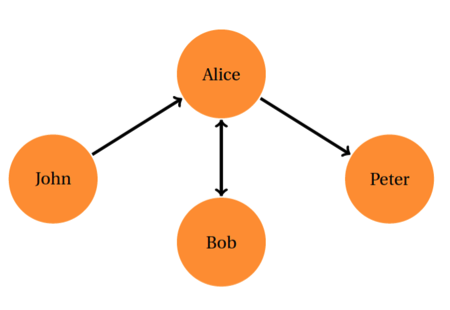

IS 596 / A1
Assignment 1: Twitter Data Crawler
Twitter is an online social networking/media site that allows users to send and read short (i.e., 140 characters) messages called "tweets" in real time. Its popularity as a fast information dissemination platform has led to applications in various domains (e.g., business, disaster recovery, intelligent transportation, smart cities, military scenarios, etc.). Users on Twitter are generating about half a billion tweets everyday. Some of these tweets are available to researchers and developers through Twitter's public APIs.
In this assignment, you will learn how to collect different types of data from Twitter
by using an open-source library called Tweepy in order to build your own Twitter data crawler. Since Twitter has an IP based rate limit policy, please use your own computer to finish this assignment. If you have a problem in finding a machine to finish the assignment, please contact the instructor.
Objectives:
Build a crawler that collects a user's profile information from Twitter given the user's Twitter ID.
Build a crawler that collects a user's social network information given the user's ID.
Build a crawler that collects the tweets using a set of specified keywords and a geolocation-based criterion.
Introduction to Open Authentication (OAuth):
Open Authentication (OAuth) is an open standard for authentication that is adopted by Twitter to provide access to
the protected information. OAuth provides a safer alternative to traditional authentication approaches
using a three-way handshake.
Here is the reference for more details about OAuth: Twitter OAuth
The authentication of API requests on Twitter is done through OAuth. Note that Twitter APIs can only be accessed
by registered applications (e.g., the crawlers you will develop in this assignment). In order to register your application, you first need to have a Twitter account. If you already have one, you can just use it. If not, you can go ahead and create an account on Twitter. After that, you need to bind your Twitter account with the application you registered (i.e., crawlers). Once you finish the binding process, you will get the keys and tokens (i.e., a pair of consumer key and consumer secret and a pair of access token and access token secret) for your application.
Here are the main steps for the above registration and binding process:
Register your application to Twitter and get the consumer keys:
Go to https://apps.twitter.com/, apply for a developer's account, and register a new application to Twitter for this assignment. You can pick a name of your choice for the application. For website URL, you can either use your own homepage or simply type http://IP address of your machine.
Fill in all required fields, accept the Developer Agreement, solve the CAPTCHA and submit the form.
Obtain the consumer key (API key) and consumer secret from the screen and use them in your application (i.e., crawlers).
Bind your Twitter account and application and get the access tokens:
On the webpage of your application, click the Keys and Access Tokens tab, then scroll down and click Create my access token.
On the webpage of your application, click the Permissions tab and configure your application with the permission level you need (namely, read-write-with-direct messages).
Obtain the indicated access token and access token secret from the screen and use them in your application.
Note: Please safely store the access token and access token secret at the first time that you generate it. The access token and access token secret might not be accessed beyond the first time they are generated.
Introduction to Tweepy (A Python library for accessing the Twitter API):
Python is a great programming language for fast text data processing. Active developer communities create many useful libraries that extend the language for various applications. One of those libraries is Tweepy. It is open-sourced and hosted on Github. Tweepy provides an easy way for your python code to talk to Twitter through its APIs. To get a quick start, please read the Tweepy Documentation and its Github Repository. For more information about Tweepy, you can visit www.tweepy.org.
This programming assignment requires Python 3.6 or later* and additional Python packages, namely Tweepy. You can download Python from Python Download and find more information about Python from www.python.org.
If you are new to Python, here is a tutorial to get started on Python: docs.python.org/3/
* If you use other versions of Python (i.e., other than 3.6), please make sure your code runs correctly and specify the version number of your Python in the README file you turn in.
The main steps of installing Tweepy are as follows:
Tweepy can be cloned from the Github repository using the commands below:
$ git clone https://github.com/tweepy/tweepy.git
$ cd tweepy
$ pip install .
Or using easy install:
$ pip install tweepy
Either way gives you the latest version of Tweepy.
Note : Just for your information, Twitter has some rate limits on its Public API. You could get more information here: Twitter API Rate Limits
Exercises:
- Collecting user's profile information:
Users create profiles to describe themselves on Twitter. User profiles provide a rich source of information to study Twitter users.
The following is a snapshot of a user's profile information (the user ID is 17883396).
Screen Name: iSchoolUI
User Name: iSchool at Illinois
User Location: Champaign, IL
User Description: The School of Information Sciences at the University of Illinois Urbana-Champaign
| The Power of Information | https://t.co/UTls1Hlggg | #iSchoolUI
Number of Followers: 4492
Number of Friends: 1158
Number of Statuses: 8345
User URL: https://t.co/YUWpBWGCpj
Task 1 :
Given a list of user IDs, please write a data crawler to collect the users' profile information.
What to Turn In :
(1) A result file that contains the profile information of the Twitter users with the following IDs: 18165866, 26257166, 12579252.
(2) The source code of your crawler to finish this task.
- Collecting user's social network information:
A user's social network on Twitter is a directed network. There are two types of connections between users: follower and friend.
If user A follows user B on Twitter, A is a follower of B and B is a friend of A. For example, in the following figure, John follows Alice, therefore John is Alice's follower. Alice follows Peter, and Peter
is a friend of Alice.

The following is a snapshot of a user's social network information on Twitter (the user ID is 13334762).
Friends of 13334762:
24PullRequests
rainbowlesions
redmonk
sogrady
monkchips
LauraHeisman
monatheoctocat
afrodjiak
chobberoni
katesegrin
mscccc
Azure
githubdesign
tenderlove
carlosmn
linuxfoundation
martinfowler
natfriedman
rauchg
satyanadella
Followers of 13334762:
TurekBot
newesissrl
AndonyNS
MaratLevit
a1c0f94d264640d
weare_solvers
Dom_Cornrows
ThisIsFlorianK
linuxdaemon
PludeScott
ArtDragos
imaedeamiri
Kiml3eang
spencer_corwin
ManhVu74447997
ldapdotcom
eeruizr
erickro98267524
IntellectValley
hilalyssa
Task 2 :
Given a list of user IDs, please write a data crawler to collect the user social network information (i.e., the lists of screen names of the user's friends and followers)
What to Turn In :
(1) A result file that contains the social network information of the Twitter users with the following IDs: 18165866, 26257166, 12579252. Note: you only need to collect the first 20 followers and friends of a specified user in the result file.
(2) The source code of your crawler to finish this task.
- Collecting tweets in real-time filtered by specified keywords and geo-location:
Searching on Twitter is facilitated through the use of search parameters. Acceptable search parameters on Twitter include keywords and geographic regions.
Twitter provides the APIs to collect tweets that contain the specified keywords or originate from a given geographic region. Returned tweets of the search are in JavaScript Object Notation (JSON) format, which is a popular format that is widely used as an object notation on the web. Please refer to Twitter Document for what exact fields are available in a tweet.
Hint: Twitter has two different APIs for applications to collect tweets: search API and streaming API. For this assignment, you might want to look at both and decide which one to use.
Task 3 :
Please write a data crawler to:
(1) collect tweets that contain one of the following two keywords: [Illinois, weather]
(2) collect tweets that originate from the geographic region around Champaign: [-88.31,40.06,-88.22,40.15]. Note the coordinates correspond to two diagonal points of a rectangle: Longitude of left point, Latitude of left point, Longitude of right point, Latitude of right point. (Note that Google Map normally takes a slightly different format as [latitude, longitude]).
What to Turn In :
(1) A result file of tweets that contain one of the above two keywords (50 tweets will be enough and the result file size should be less than 1 M).
(2) A result file of tweets that originate from the specified geographic region (50 tweets will be enough and the result file size should be less than 1 M).
(3) The source code of your crawler to finish this task.
Note: In the result files, you only need to record the text part of the tweet instead of the entire JSON response you get from your query.
Notes:
For the above three tasks, you can either submit a single script file that finishes all three tasks altogether or three individual script files that finish task 1-3, respectively.
Please submit a README file and describe in this file: 1) how to run your source code; 2) the Python version you used to test your code.
If you do not feel comfortable to submit your token, key and secrete (due to privacy concerns), please leave them blank in your code and make a comment in your code and README. We will use ours to grade your code.
Where to Turn In:
Upload your work in a .zip or .tar.gz file to Canvas under Assignments/Assignment 1.
Deadline:
This assignment is due at the beginning of class on Monday, Sep. 13.